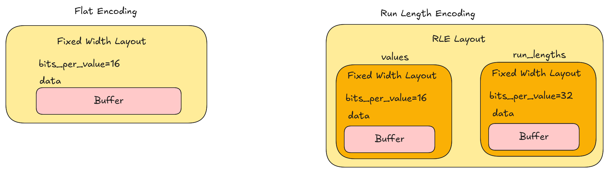
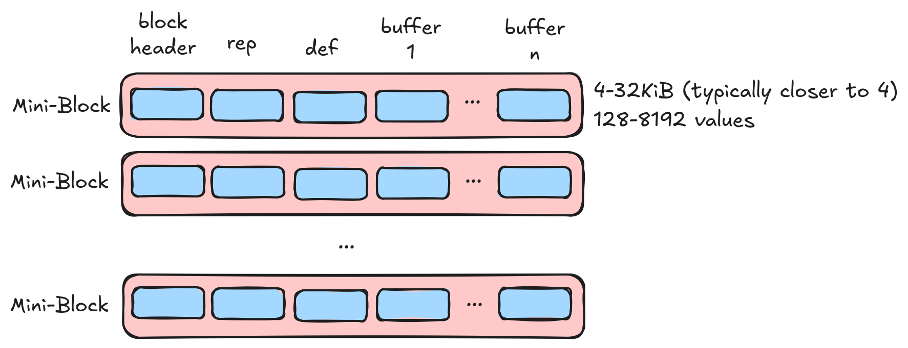
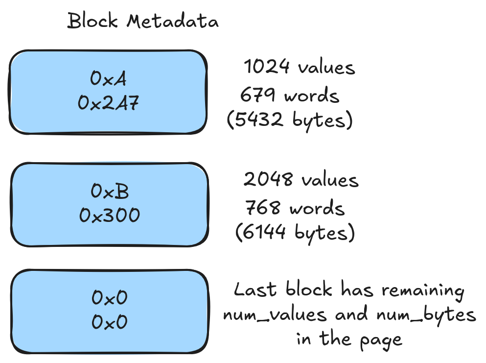
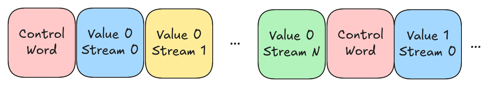
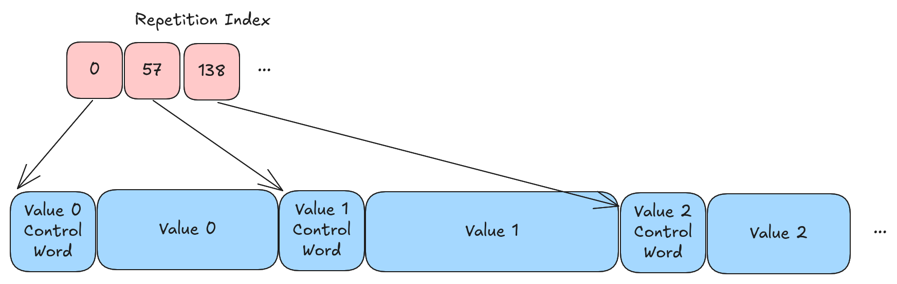

Lance Encoding Strategy¶
The encoding strategy determines how array data is encoded into a disk page. The encoding strategy tends to evolve more quickly than the file format itself.
Older Encoding Strategies¶
The 0.1 and 2.0 encoding strategies are no longer documented. They were significantly different from future encoding strategies and describing them in detail would be a distraction.
Terminology¶
An array is a sequence of values. An array has a data type which describes the semantic interpretation of the values. A layout is a way to encode an array into a set of buffers and child arrays. A buffer is a contiguous sequence of bytes. An encoding describes how the semantic interpretation of data is mapped to the layout. An encoder converts data from one layout to another.
Data types and layouts are orthogonal concepts. An integer array might be encoded into two completely different layouts which represent the same data.

Data Types¶
Lance uses a subset of Arrow's type system for data types. An Arrow data type is both a data type and an encoding. When writing data Lance will often normalize Arrow data types. For example, a string array and a large string array might end up traveling down the same path (variable width data). In fact, most types fall into two general paths. One for fixed-width data and one for variable-width data (where we recognize both 32-bit and 64-bit offsets).
At read time, the Arrow data type is used to determine the target encoding. For example, a string array and large string array might both be stored in the same layout but, at read time, we will use the Arrow data type to determine the size of the offsets returned to the user. There is no requirement the output Arrow type matches the input Arrow type. For example, it is acceptable to write an array as "large string" and then read it back as "string".
Search Cache¶
The search cache is a key component of the Lance file reader. Random access requires that we locate the physical location of the data in the file. To do so we need to know information such as the encoding used for a column, the location of the page, and potentially other information. This information is collectively known as the "search cache" and is implemented as a basic LRU cache. We define a "initialization phase" which is when we load the various indexing information into the search cache. The cost of initialization is assumed to be amortized over the lifetime of the reader.
When performing full scans (i.e. not random access), we should be able to ignore the search cache and sometimes can avoid loading it entirely. We do want to optimize for cold scans as the initialization phase is often not amortized over the lifetime of the reader.
Structural Encoding¶
The first step in encoding an array is to determine the structural encoding of the array. A structural encoding breaks the data into smaller units which can be independently decoded. Structural encodings are also responsible for encoding the "structure" (struct validity, list validity, list offsets, etc.) typically utilizing repetition levels and definition levels.
Structural encoding is fairly complicated! However, the goal is to suck out all the details related to I/O scheduling so that compression libraries can focus on compression. This keeps our compression traits simple without sacrificing our ability to perform random access.
There are only a few structural encodings. The structural encoding is described by the PageLayout message and
is the top-level message for the encoding.
message PageLayout {
oneof layout {
// A layout used for pages where the data is small
MiniBlockLayout mini_block_layout = 1;
// A layout used for pages where all (visible) values are the same scalar value or null.
ConstantLayout constant_layout = 2;
// A layout used for pages where the data is large
FullZipLayout full_zip_layout = 3;
/* A layout where large binary data is encoded externally
* and only the descriptions are put in the page
*/
BlobLayout blob_layout = 4;
// A sparse structural layout. This variant requires file version 2.3 or later.
SparseLayout sparse_layout = 5;
}
}
Repetition and Definition Levels¶
Repetition and definition levels are an alternative to validity bitmaps and offset arrays for expressing struct and list information. They have a significant advantage in that they combine all of these buffers into a single buffer which allows us to avoid multiple IOPS.
A more extensive explanation of repetition and definition levels can be found in the code. One particular note is that we use 0 to represent the "inner-most" item and Parquet uses 0 to represent the "outer-most" item. Here is an example:
Definition Levels¶
Consider the following array:
In Arrow we would have the following validity arrays:
Outer validity : 1, 0, 1, 1
Middle validity: 1, ?, 0, 1
Inner validity : 1, ?, ?, 0
Values : 1, ?, ?, ?
The ? values are undefined in the Arrow format. We can convert these into definition levels as follows:
| Values | Definition | Notes |
|---|---|---|
| 1 | 0 | Valid at all levels |
| ? | 3 | Null at outer level |
| ? | 2 | Null at middle level |
| ? | 1 | Null at inner level |
Repetition Levels¶
Consider the following list array with 3 rows
We would have three offsets arrays in Arrow:
Outer-most ([]): [0, 3, 3, 4]
Middle ({}): [0, 3, 4, 4, 5]
Inner (<>): [0, 2, 2, 3, 4, 5]
Values : [0, 1, 2, 3, 4]
We can convert these into repetition levels as follows:
| Values | Repetition | Notes |
|---|---|---|
| 0 | 3 | Start of outer-most list |
| 1 | 0 | Continues inner-most list (no new lists) |
| ? | 1 | Start of new inner-most list (empty list) |
| 2 | 1 | Start of new inner-most list |
| 3 | 2 | Start of new middle list |
| ? | 2 | Start of new inner-most list (empty list) |
| ? | 3 | Start of new outer-most list (empty list) |
| 4 | 3 | Start of new outer-most list |
Mini Block Page Layout¶
The mini block page layout is the default layout for smallish types. This fits most of the classical data types (integers, floats, booleans, small strings, etc.) that Parquet and related formats already handle well. As is no surprise, the approach used is pretty similar to those formats.

The data is divided into small mini-blocks. Each mini-block should contain a power-of-two number of values (except for the last mini-block) and should be less than 32KiB of compressed data. We have to read an entire mini-block to get a single value so we want to keep the mini-block size small. Mini blocks are padded to 8 byte boundaries. This helps to avoid alignment issues. Each mini-block starts with a small header which helps us figure out how much padding has been applied.
The repetition and definition levels are sliced up and stored in the mini-blocks along with the compressed buffers. Since we need to read an entire mini-block there is no need to zip up the various buffers and they are stored one after the other (repetition, definition, values, ...).
Buffer 1 (Mini Blocks)¶
| Bytes | Meaning |
|---|---|
| 1 | Number of buffers in the mini-block |
| 2 | Size of buffer 0 |
| 2 | Size of buffer 1 |
| ... | ... |
| 2 | Size of buffer N |
| 0-7 | Padding to ensure 8 byte alignment |
| * | Buffer 0 |
| 0-7 | Padding to ensure 8 byte alignment |
| * | Buffer 1 |
| ... | ... |
| 0-7 | Padding to ensure 8 byte alignment |
| * | Buffer N |
| 0-7 | Padding to ensure 8 byte alignment |
Note: It is natural to explain this buffer first but it is actually the second buffer in the page.
Buffer 0 (Mini Block Metadata)¶

To enable random access we have a small metadata lookup which contains two bytes per mini-block. This lookup tells us how many bytes are in each mini block and how many items are in the mini block. This metadata lookup must be loaded at initialization time and placed in the search cache.
| Bits (not bytes) | Meaning |
|---|---|
| 12 | Number of 8-byte words in block 0 |
| 4 | Log2 of number of values in block 0 |
| 12 | Number of 8-byte words in block 1 |
| 4 | Log2 of number of values in block 1 |
| ... | ... |
| 12 | Number of 8-byte words in block N |
| 4 | Log2 of number of values in block N |
For all chunks except the last, the lower 4 bits store log2(num_values) and num_values must be a power of two.
For the last chunk, these bits are set to 0. The protobuf stores the total number of values in the page, so readers
can derive the final chunk size by subtracting the values from earlier chunks.
Buffer 2 (Dictionary, optional)¶
Dictionary encoding is an encoding that can be applied at many different levels throughout a file. For example, it could be used as a compressive encoding or it could even be entirely external to the file. We've found the most convenient simple place to apply dictionary encoding is at the structural level. Since dictionary indices are small we always use the mini block layout for dictionary encoding. When we use dictionary encoding we store the dictionary in the buffer at index 2. We require the dictionary to be full loaded and decoded at initialization time. This means we don't have to load the dictionary during random access but it does require the dictionary be placed in the search cache.
Dictionary values are stored as a single buffer and compressed through the block compression path. The compression
scheme for dictionary values can be configured separately (see lance-encoding:dict-values-compression below).
Buffer 2 (or 3) (Repetition Index, optional)¶
If there is repetition (list levels) then we need some way to translate row offsets into item offsets. The mini blocks always store items. During a full scan the list offsets are restored when we decode the repetition levels. However, to support random access, we don't have the repetition levels available. Instead we store a repetition index in the next available buffer (index 2 or 3 depending on whether the dictionary is present).
The repetition index is a flat buffer of u64 values. We have N * D values where N is the number of mini blocks and D Is the desired depth of random access plus one. For example, to support 1-dimensional lookups (random access by rows) then D is 2. To support two-dimensional lookups (e.g. rows[50][17]) then we could set D to 3.
Currently we only support 1-dimensional random access. Currently we do not compress the repetition index.
This may change in future versions.
| Bytes | Meaning |
|---|---|
| 8 | Number of rows in block 0 |
| 8 | Number of partial items in block 0 |
| 8 | Number of rows in block 1 |
| 8 | Number of partial items in block 1 |
| ... | ... |
| 8 | Number of rows in block N |
| 8 | Number of partial items in block N |
The last 8 bytes of each block stores the number of "partial" items. These are items leftover after the last complete row. We don't require rows to be bounded by mini-blocks so we need to keep track of this. For example, if we have 10,000 items per row then we might have several mini-blocks with only partial items and 0 rows.
At read time we can use this repetition index to translate row offsets into item offsets.
Mini Block Compression¶
The mini block layout relies on the compression algorithm to handle the splitting of data into mini-blocks. This is because the number of values per block will depend on the compressibility of the data. As a result, there is a special trait for mini block compression.
The data compression algorithm is the algorithm that decides chunk boundaries. The repetition and definition levels are then sliced appropriately and sent to a block compressor. This means there are no constraints on how the repetition and definition levels are compressed.
Beyond splitting the data into mini-blocks, there are no additional constraints. We expect to fully decode mini blocks as opaque chunks. This means we can use any compression algorithm that we deem suitable.
Protobuf¶
message MiniBlockLayout {
/* Description of the compression of repetition levels (e.g. how many bits per rep)
*
* Optional, if there is no repetition then this field is not present
*/
CompressiveEncoding rep_compression = 1;
/* Description of the compression of definition levels (e.g. how many bits per def)
*
* Optional, if there is no definition then this field is not present
*/
CompressiveEncoding def_compression = 2;
// Description of the compression of values
CompressiveEncoding value_compression = 3;
/* Description of the compression of the dictionary data
*
* Optional, if there is no dictionary then this field is not present
*/
CompressiveEncoding dictionary = 4;
// Number of items in the dictionary
uint64 num_dictionary_items = 5;
// The meaning of each repdef layer, used to interpret repdef buffers correctly
repeated RepDefLayer layers = 6;
/* The number of buffers in each mini-block, this is determined by the compression and does
* NOT include the repetition or definition buffers (the presence of these buffers can be determined
* by looking at the rep_compression and def_compression fields)
*/
uint64 num_buffers = 7;
/* The depth of the repetition index.
*
* If there is repetition then the depth must be at least 1. If there are many layers
* of repetition then deeper repetition indices will support deeper nested random access. For
* example, given 5 layers of repetition then the repetition index depth must be at least
* 3 to support access like `rows[50][17][3]`.
*
* We require `repetition_index_depth + 1` u64 values per mini-block to store the repetition
* index if the `repetition_index_depth` is greater than 0. The +1 is because we need to store
* the number of "leftover items" at the end of the chunk. Otherwise, we wouldn't have any way
* to know if the final item in a chunk is valid or not.
*/
uint32 repetition_index_depth = 8;
/* The page already records how many rows are in the page. For mini-block we also need to know how
* many "items" are in the page. A row and an item are the same thing unless the page has lists.
*/
uint64 num_items = 9;
// Since Lance 2.2, miniblocks have larger chunk sizes (>= 64KB)
bool has_large_chunk = 10;
}
The protobuf for the mini block layout describes the compression of the various buffers. It also tells us some information about the dictionary (if present) and the repetition index (if present).
Full Zip Page Layout¶
The full zip page layout is a layout for larger values (e.g. vector embeddings) which are large but not so large that we can justify a single IOP per value. In this case we are trying to avoid storing a large amount of "chunk overhead" (both in terms of buffer space and the RAM space in the search cache that we would need to store the repetition index). As a tradeoff, we are introducing a second IOP per-range for random access reads (unless the data is fixed-width such as vector embeddings).
We currently use 256 bytes as the cutoff for the full zip layout. At this point we would only be fitting 16 values in a 4KiB disk sector and so creating a mini-block descriptor for every 16 values would be too much overhead.
As a further consequence, we must ensure that the compression algorithm is "transparent" so that we can index individual values after compression has been applied. This prevents us from using compression algorithms such as delta encoding. If we want to apply general compression we have to apply them on a per-value basis. The way we enforce this is by requiring the compression to return either a flat fixed-width or variable-width layout so that we know the location of each element.
The repetition and definition levels, along with all compressed buffers, are all zipped together into a single buffer.
Data Buffer (Buffer 0)¶

The data buffer is a single buffer that contains the repetition, definition, and value data, all zipped into a single buffer. The repetition and definition information are combined and byte packed. This is referred to as a control word. If the value is null or an empty list, then the control word is all that is serialized. If there is no validity or repetition information then control words are not serialized. If the value is variable-width then we encode the size of the value. This is either a 4-byte or 8-byte integer depending on the width used in the offsets returned by the compression (in future versions this will likely be encoded with some kind of variable-width integer encoding). Finally the value buffers themselves are appended.
| Bytes | Meaning |
|---|---|
| 0-4 | Control word 0 |
| 0/4/8 | Value 0 size |
| * | Value 0 data |
| ... | ... |
| 0-4 | Control word N |
| 0/4/8 | Value N size |
| * | Value N data |
Note: a fixed-width data type that has no validity information (e.g. non-nullable vector embeddings) is simply a flat buffer of data.
Repetition Index (Buffer 1)¶

If there is repetition information or the values are variable width then we need additional help to locate values in the disk page. The repetition index is an array of u64 values. There is one value per row and the value is an offset to the start of that row in the data buffer. To perform random access we require two IOPS. First we issue an IOP into the repetition index to determine the location and then a second IOP into the data buffer to load the data. Alternatively, the entire repetition index can be loaded into memory in the initialization phase though this can lead to high RAM usage by the search cache.
The repetition index must have a fixed width (or else we would need a repetition index to read the repetition index!) and be transparent. As a result the compression options are limited. That being said, there is little value (in terms of performance) in compressing the repetition index. It is never read in its entirety as it is not needed for full scans. Currently the repetition index is always compressed with simple (non-chunked) byte packing into 1,2,4, or 8 byte values.
Protobuf¶
message FullZipLayout {
// The number of bits of repetition info (0 if there is no repetition)
uint32 bits_rep = 1;
// The number of bits of definition info (0 if there is no definition)
uint32 bits_def = 2;
/* The number of bits of value info
*
* Note: we use bits here (and not bytes) for consistency with other encodings. However, in practice,
* there is never a reason to use a bits per value that is not a multiple of 8. The complexity is not
* worth the small savings in space since this encoding is typically used with large values already.
*/
oneof details {
// If this is a fixed width block then we need to have a fixed number of bits per value
uint32 bits_per_value = 3;
// If this is a variable width block then we need to have a fixed number of bits per offset
uint32 bits_per_offset = 4;
}
// The number of items in the page
uint32 num_items = 5;
// The number of visible items in the page
uint32 num_visible_items = 6;
// Description of the compression of values
CompressiveEncoding value_compression = 7;
// The meaning of each repdef layer, used to interpret repdef buffers correctly
repeated RepDefLayer layers = 8;
}
The protobuf for the full zip layout describes the compression of the data buffer. It also tells us the size of the control words and how many bits we have per value (for fixed-width data) or how many bits we have per offset (for variable-width data).
Sparse Page Layout¶
Sparse pages require Lance 2.3. They represent flat or nested Arrow structure directly as slot-domain mappings instead
of dense repetition and definition events. Writers emit this layout only in files declared as 2.3 or above. The layout is
identified only by PageLayout; field metadata does not identify the layout of an existing page.
A domain is a layer-local integer coordinate space [0, num_slots), and a slot is one element in that space. The
outer-most domain contains the page's top-level rows. Each layer maps its parent domain to the next layer's parent
domain, and the terminal child domain contains the leaf value slots stored in value chunks.
Structural layers are ordered from outer-most to inner-most:
- validity maps a nullable item or struct slot to valid or null
- list maps non-empty parent slots to variable-size child ranges
- fixed-size-list maps each parent slot to a child range of a fixed dimension
The layer list may be empty for a flat, non-nullable leaf page. In that case the scheduling domain and
num_visible_items must be equal. The explicit writer currently emits its normalized all-valid layer even when a flat
page could use this shorter wire representation.
A list slot that is valid and absent from non_empty_positions is an empty list. Maps use the same structural contract
as lists. The terminal child-domain size equals SparseLayout.num_visible_items.
SparseLayout.num_visible_items is the number of leaf value slots encoded in value chunks. Null leaf slots count
because they still occupy positions in Arrow's leaf value buffer; a nullable primitive with 100 slots, including 30
nulls, has 100 visible items. SparseLayout.num_items is the number of entries in the equivalent dense repetition and
definition stream. It equals num_visible_items plus one structural placeholder for every list slot without children.
The first layer's num_slots is the logical top-level row count used for projection.
Position sets have four semantic representations: empty, all, one non-empty range, or an explicit
delta-compressed u64 buffer. Count sets are empty, one positive constant value, or an explicit compressed u64
buffer. Every layer has a SparseValiditySet whose meaning is explicit:
SPARSE_VALIDITY_NULL_POSITIONS: stored positions are null and all other positions are validSPARSE_VALIDITY_VALID_POSITIONS: stored positions are valid and all other positions are null
The unspecified validity meaning is invalid. Both polarities are part of the wire contract and have identical Arrow semantics after normalization.
Writer Selection¶
Writers may emit this layout only for Lance 2.3+ fields. A field can request it explicitly with
lance-encoding:structural-encoding=sparse; the same request is an input error for earlier file versions. Without an
explicit structural encoding, the Lance 2.3 writer selects sparse only when the dense mini-block repetition/definition
budget would split the page or one top-level row exceeds that budget, and only when the value path is supported by the
sparse writer. Explicit miniblock, fullzip, and sparse requests are not changed by this automatic policy. Lance
2.2 and earlier writers never select sparse.
Unsupported sparse value paths, including dictionary values and variable-width packed structs, retain their dense
behavior. Writers normalize Arrow validity and list structure once. Within-budget dense pages do not build sparse
position/count plans. All-valid layers use null positions plus empty; all-null layers use valid positions plus
empty. Other layers choose the validity polarity with the lower semantic encoded cost, with ties using null
positions. Field metadata controls writer selection only: readers always use PageLayout to determine the layout of
an encoded page and must not use field metadata for that decision.
Pages without a value payload keep the existing canonical ConstantLayout: structural-only types such as an empty
struct, and leaf pages whose visible values are all null, do not emit SparseLayout. An explicitly sparse page with
at least one non-null visible value does emit SparseLayout, even when all non-null values are equal. This boundary
avoids introducing a second structural-only representation without evidence that it improves the existing constant
encoding.
Buffers and Selective Reads¶
A sparse page contains the following physical buffers:
| Buffer | Contents |
|---|---|
| 0 | Value chunk metadata, one 8-byte entry per chunk |
| 1 | Mini-block compressed value chunks without repetition or definition levels |
| 2+ | One buffer for each explicit position or count set, in structural-layer field order |
Each value chunk metadata entry stores (chunk_size / 8) - 1 as little-endian u32, followed by its visible value
count as little-endian u32. Chunk sizes must be positive multiples of 8 and fit this representation. The sum of
chunk sizes must equal buffer 1 exactly and the sum of chunk value counts must equal num_visible_items. A value chunk
contains at most 32,768 visible values. num_buffers describes the number of value buffers inside every chunk and
excludes the structural buffers.
General-compressed sparse buffers use the existing length-prefixed LZ4 or Zstd representation and must not contain another general-compression wrapper. SparseLayout does not impose additional size or descriptor-complexity limits on otherwise representable buffers.
Readers normalize structural metadata once, project requested top-level ranges through each layer, and read only value chunks that intersect the resulting leaf ranges. When no leaf range remains, readers rebuild offsets and validity from the structural plan without reading buffer 1.
Caching and Point Reads¶
Reader initialization loads buffer 0 and every explicit structural buffer, then validates and normalizes them into a cached page plan. The cached state contains parsed value-chunk descriptors and prefix offsets, decoded semantic position/count sets, validity, and the ordered structural layers. It does not contain value payload bytes from buffer 1. The plan is cached per field and page and reused by later scans, range reads, and takes.
After that plan is cached, reading one primitive leaf value reads only the value chunk that contains it. A cold read first loads the structural metadata and then the intersecting value chunk. Reading one top-level list or fixed-size-list value may intersect multiple leaf chunks and reads each intersecting chunk. A selection whose projected structure contains no leaf slots reads no value chunk.
Validation¶
Readers must reject malformed sparse metadata instead of inferring or repairing it. Required checks include:
- physical buffer count, chunk-count bounds, and every checked offset/size range
- first-layer row domain, adjacent parent/child domain chaining, and terminal visible-value domain
- semantic set cardinality, explicit position ordering and bounds, and validity meaning
- exact
num_items - list non-empty positions being valid, count cardinality, positive counts, and child-count sum
- fixed-size-list dimension and checked child-domain multiplication
- value chunk byte/value sums, size representation and alignment, general-compression headers, descriptor buffer count, and complete chunk consumption
message SparseLayout {
// Description of the compression of values.
CompressiveEncoding value_compression = 1;
// Number of value buffers in each mini-block chunk. This does not include structural buffers.
uint64 num_buffers = 2;
/* Number of entries in the equivalent dense repetition / definition stream. This equals
* num_visible_items plus one structural placeholder for every list slot without children.
* Null leaf slots count as visible items because they still occupy positions in Arrow's
* leaf value buffer. For example, a nullable primitive with 100 slots, 30 of them null,
* has num_items = num_visible_items = 100.
*/
uint64 num_items = 3;
// Number of leaf value slots encoded in the value chunks, including null leaf slots.
uint64 num_visible_items = 4;
// If true, chunk-local value buffer sizes use u32. Otherwise they use u16.
bool has_large_chunk = 5;
/* Structural layers ordered from outer-most to inner-most. This may be empty for a flat,
* non-nullable leaf page whose scheduling domain equals num_visible_items.
*/
repeated SparseStructuralLayer structural_layers = 6;
}
message SparseStructuralLayer {
// Exactly one layer kind is required.
oneof layer {
SparseValidityLayer validity = 1;
SparseListLayer list = 2;
SparseFixedSizeListLayer fixed_size_list = 3;
}
}
message SparseValidityLayer {
// Number of nullable item or struct slots in this layer's parent and child domain.
uint64 num_slots = 1;
// Validity for the slots in this layer.
SparseValiditySet validity = 2;
}
message SparseListLayer {
// Number of list, large-list, or map slots in this layer's parent domain.
uint64 num_slots = 1;
// Number of slots in this layer's child domain.
uint64 num_child_slots = 2;
// Non-empty parent slots. Valid parent slots absent from this set are empty lists.
SparsePositionSet non_empty_positions = 3;
// Positive child counts corresponding one-for-one with non_empty_positions.
SparseCountSet counts = 4;
// Validity for the parent slots in this layer.
SparseValiditySet validity = 5;
}
message SparseFixedSizeListLayer {
// Number of fixed-size-list slots in this layer's parent domain.
uint64 num_slots = 1;
// Number of children per parent slot. The child domain has num_slots * dimension slots.
uint64 dimension = 2;
// Validity for the parent slots in this layer.
SparseValiditySet validity = 3;
}
message SparseValiditySet {
enum Meaning {
SPARSE_VALIDITY_UNSPECIFIED = 0;
// Stored positions are null; all other positions are valid.
SPARSE_VALIDITY_NULL_POSITIONS = 1;
// Stored positions are valid; all other positions are null.
SPARSE_VALIDITY_VALID_POSITIONS = 2;
}
Meaning meaning = 1;
SparsePositionSet positions = 2;
}
message SparsePositionSet {
oneof positions {
// Delta-compressed u64 positions. Cardinality is num_positions.
CompressiveEncoding explicit = 1;
// One contiguous, non-empty range.
SparsePositionRange range = 2;
// Every position in the domain.
SparsePositionAll all = 3;
// No positions in the domain.
SparsePositionEmpty empty = 4;
}
// Semantic cardinality of this set.
uint64 num_positions = 5;
}
message SparseCountSet {
oneof counts {
// Compressed u64 child counts. Cardinality comes from the containing position set.
CompressiveEncoding explicit = 1;
// One positive child count shared by every non-empty list slot.
SparseCountConstant constant = 2;
// No counts; valid only when there are no non-empty list slots.
SparseCountEmpty empty = 3;
}
}
Constant Page Layout¶
This layout is used when all (visible) values in the page are the same scalar value.
The all-null case is represented by a constant page without an inline scalar value. Surprisingly, this does not mean there is no data. If there are any levels of struct or list then we need to store the rep/def levels so that we can distinguish between null structs, null lists, empty lists, and null values.
Repetition and Definition Levels (Buffers 0 and 1)¶
Note: We currently store rep levels in the first buffer with a flat layout of 16-bit values and def levels in the second buffer with a flat layout of 16-bit values. This will likely change in future versions.
Protobuf¶
message ConstantLayout {
// The meaning of each repdef layer, used to interpret repdef buffers correctly
repeated RepDefLayer layers = 5;
/* Inline fixed-width scalar value bytes.
*
* This MUST only be used for types where a single non-null element is represented by a single
* fixed-width Arrow value buffer (i.e. no offsets buffer, no child data).
*
* Constraints:
* - MUST be absent for an all-null page
* - MUST be <= 32 bytes if present
*/
optional bytes inline_value = 6;
/* Optional compression algorithm used for the repetition buffer.
* If absent, repetition levels are stored as raw u16 values.
*/
CompressiveEncoding rep_compression = 7;
/* Optional compression algorithm used for the definition buffer.
* If absent, definition levels are stored as raw u16 values.
*/
CompressiveEncoding def_compression = 8;
// Number of values in repetition buffer after decompression.
uint64 num_rep_values = 9;
// Number of values in definition buffer after decompression.
uint64 num_def_values = 10;
}
All we need to know is the meaning of each rep/def level and (when present) the inline scalar value bytes.
Blob Page Layout¶
The blob page layout is a layout for large binary values where we would only have a few values per disk page.
The actual data is stored out-of-line in external buffers. The disk page stores a "description" which is a
struct array of two fields: position and size. The position is the absolute file offset of the blob and
the size is the size (in bytes) of the blob. The inner page layout describes how the descriptions are encoded.
The validity information (definition levels) is smuggled into the descriptions. If the size and position are both zero then the value is empty. Otherwise, if the size is zero and the position is non-zero then the value is null and the position is the definition level.
This layout is only recommended when you can justify a single IOP per value. For example, when values are 1MiB or larger.
This layout has no buffers of its own and merely wraps an inner layout.
Protobuf¶
message BlobLayout {
// The inner layout used to store the descriptions
PageLayout inner_layout = 1;
/* The meaning of each repdef layer, used to interpret repdef buffers correctly
*
* The inner layout's repdef layers will always be 1 all valid item layer
*/
repeated RepDefLayer layers = 2;
}
Since we smuggle the validity into the descriptions we don't need to store it in the inner layout and so the rep/def meaning is stored in the blob layout and the rep/def meaning in the inner layout will be 1 all valid item layer.
Semi-Structural Transformations¶
There are some data transformations that are applied to the data before (or during) the structural encoding process. These are described here.
Dictionary Encoding¶
Dictionary encoding is a technique that can be applied to any kind of array. It is useful when there are not very many unique values in the array. First, a "dictionary" of unique values is created. Then we create a second array of indices into the dictionary.
Dictionary encoding is also known as "categorical encoding" in other contexts.
Dictionary encoding could be treated as simply another compression technique but, when applied, it would be an opaque compression technique which would limit its usability (e.g. in a full zip context). As a result, we apply it before any structural encoding takes place. This allows us to place the dictionary in the search cache for random access.
Struct Packing¶
Struct packing is an alternative representation to apply to struct values. Instead of storing that struct in a columnar fashion it will be stored in a row-major fashion. This will reduce the number of IOPS needed for random access but will prevent the ability to read a single field at a time. This is useful when all fields in the struct are always accessed together.
Packed struct is always opt-in (see section on configuration below).
In Lance 2.1, packed struct is limited to fixed-width children (PackedStruct).
Starting with Lance 2.2, variable-width children are also supported via VariablePackedStruct.
Fixed Size List¶
Fixed size lists are an Arrow data type that needs specialized handling at the structural level. If the underlying data type is primitive then the fixed size list will be primitive (e.g. a tensor). If the underlying data type is structural (struct/list) then the fixed size list is structural and should be treated the same as a variable-size list.
We don't want compression libraries to need to worry about the intricacies of fixed-size lists. As a result we flatten the list as part of structural encoding. This complicates random access as we must translate between rows (an entire fixed size list) and items (a single item in the list).
If the items in a fixed size list are nullable then we do not treat that validity array as a repetition or definition level. Instead, we store the validity as a separate buffer. For example, when encoding nullable fixed size lists with mini-block encoding the validity buffer is another buffer in the mini-block. When encoding nullable fixed size lists with full-zip encoding the validity buffer is zipped together with the values.
The good news is that fixed size lists are entirely a structural encoding concern. Compression techniques are free to pretend that the fixed-size list data type does not exist.
Compression¶
Once a structural encoding is chosen we must determine how to compress the data. There are various buffers that might be compressed (e.g. data, repetition, definition, dictionary, etc.). The available compression algorithms are also constrained by the structural encoding chosen. For example, when using the full zip layout we require transparent compression. As a result, each encoding technique may or may not be usable in a given scenario. In addition, the same technique may be applied in a different way depending on the encoding chosen.
In implementation terms we have a trait for each compression constraint. The techniques then implement the traits that they can be applied to. To start with, here is a summary of compression techniques which are implemented in at least one scenario and a list of which traits the technique implements. A ❓ is used to indicate that the technique should be usable in that context but we do not yet do so while a ❌ indicates that the technique is not usable because it is not transparent. Note, even though a technique is not transparent it can still be applied on a per-value basis. We use ☑️ to mark a technique that is applied on a per-value basis:
| Compression | Used in Block Context | Used in Full Zip Context | Used in Mini-Block Context |
|---|---|---|---|
| Flat | ✅ (2.1) | ✅ (2.1) | ✅ (2.1) |
| Variable | ✅ (2.1) | ✅ (2.1) | ✅ (2.1) |
| Constant | ✅ (2.1) | ❓ | ❓ |
| Bitpacking | ✅ (2.1) | ❓ | ✅ (2.1) |
| Fsst | ❓ | ✅ (2.1) | ✅ (2.1) |
| Rle | ✅ (2.2) | ❌ | ✅ (2.1) |
| ByteStreamSplit | ❓ | ❌ | ✅ (2.1) |
| General | ✅ (2.2) | ☑️ (2.1) | ✅ (2.1) |
In the following sections we will describe each technique in a bit more detail and explain how it is utilized in various contexts.
Flat¶
Flat compression is the uncompressed representation of fixed-width data. There is a single buffer of data with a fixed number of bits per value.
When applied in a mini-block context we find the largest power of 2 number of values that will be less than 8,186 bytes and use that as the block size.
Variable¶
Variable compression is the uncompressed representation of variable-width data. There is a buffer of values and a buffer of offsets.
When applied in a mini-block context each block may have a different number of values. We walk through the values until we find the point that would exceed 4,096 bytes and then use the most recent power of 2 number of values that we have passed.
Constant¶
Constant compression is currently only utilized in a few specialized scenarios such as all-null arrays.
This will likely change in future versions.
Bitpacking¶
Bitpacking is a compression technique that removes the unused bits from a set of values. For example, if we have a u32 array and the maximum value is 5000 then we only need 13 bits to store each value.
When used in a mini-block context we always use 1024 values per block. In addition, we store the compressed bit width inline in the block itself.
Bitpacking is, in theory, usable in a full zip context. However, values in this context are so large that shaving off a few bits is unlikely to have any meaningful impact. Also, the full-zip context keeps things byte-aligned and so we would have to remove at least 8 bits per value.
Fsst¶
Fsst is a fast and transparent compression algorithm for variable-width data. It is the primary compression algorithm that we apply to variable-width data.
Currently we use a single FSST symbol table per disk page and store that symbol table in the protobuf description. This is for historical reasons and is not ideal and will likely change in future versions.
When FSST is applied in a mini-block context we simply compress the data and let the underlying compressor (always
Variable at the moment) handle the chunking.
Run Length Encoding (RLE)¶
Run length encoding is a compression technique that compresses large runs of identical values into an array of values and an array of run lengths. This is currently used in the mini-block context. To determine if we should apply run-length encoding we look at the number of runs divided by the number of values. If the ratio is below a threshold (by default 0.5) then we apply run-length encoding.
Byte Stream Split (BSS)¶
Byte stream split is a compression technique that splits multi-byte values by byte position, creating separate streams for each byte position across all values. This is a rudimentary and simple form of translating floating point values into a more compressible format because it tends to cluster the mantissa bits together which are often consistent across a column of floating point values. It does not actually make the data smaller by itself. As a result, BSS is only applied if general compression is also applied on the column.
We currently determine whether or not to apply BSS by looking at an entropy statistics. There is a configurable sensitivity parameter. A sensitivity of 0.0 means never apply BSS and a sensitivity of 1.0 means always apply BSS.
General¶
General compression is a catch-all term for classical opaque compression techniques such as LZ4, ZStandard, Snappy, etc. These techniques are typically back-referencing compressors which replace values with a "back reference" to a spot where we already saw the value.
When applied in a mini-block context we run general compression after all other compression and compress the entire mini-block.
When applied in a full zip context we run general compression on each value.
The only time general compression is automatically applied is in a full-zip context when we have values that are at least 32KiB large. This is because general compression can be CPU intensive.
However, general compression is highly effective and we allow it to be opted into in other contexts via configuration.
Compression Configuration¶
The following section lists the available configuration options. These can be set programmatically through writer options. However, they can also be set in the field metadata in the schema.
| Key | Values | Default | Description |
|---|---|---|---|
lance-encoding:compression |
lz4, zstd, none, ... |
none |
Opt-in to general compression. The value indicates the scheme. |
lance-encoding:compression-level |
Integers (range is scheme dependent) | Varies by scheme | Higher indicates more work should be done to compress the data. |
lance-encoding:rle-threshold |
0.0-1.0 |
0.5 |
See below |
lance-encoding:bss |
off, on, auto |
auto |
See below |
lance-encoding:dict-divisor |
Integers greater than 1 | 2 |
See below |
lance-encoding:dict-size-ratio |
0.0-1.0 |
0.8 |
See below |
lance-encoding:dict-values-compression |
lz4, zstd, none |
lz4 |
Select general compression scheme for dictionary values |
lance-encoding:dict-values-compression-level |
Integers (scheme dependent) | Varies by scheme | Compression level for dictionary values general compression |
lance-encoding:general |
off, on |
off |
Whether to apply general compression. |
lance-encoding:packed |
Any string | Not set | Whether to apply packed struct encoding (see above). |
lance-encoding:structural-encoding |
miniblock, fullzip, sparse |
Not set | Force a structural encoding; sparse requires Lance 2.3. |
Configuration Details¶
Compression Scheme¶
The lance-encoding:compression setting enables general-purpose compression algorithms to be applied. Available schemes:
lz4: Fast compression with good compression ratios. Default compression level is fast mode.zstd: High compression ratios with configurable levels (0-22). Better compression than LZ4 but slower.none: No general compression applied (default).fsst: Fast Static Symbol Table compression for string data.
General compression is applied on top of other encoding techniques (RLE, BSS, bitpacking, etc.) to further reduce data size. For mini-block layouts, compression is applied to entire mini-blocks. For full-zip layouts with large values (≥32KiB), compression is automatically applied per-value.
Compression Level¶
The compression level is scheme dependent. Currently the following schemes support the following levels:
| Scheme | Crate Used | Levels | Default |
|---|---|---|---|
zstd |
zstd |
0-22 |
crate dependent (3 as of this writing) |
lz4 |
lz4 |
N/A | The LZ4 crate has two modes (fast and high compression) and currently this is not exposed to configuration. The LZ4 crate wraps a C library and the default is dependent on the C library. The default as of this writing is fast |
Higher compression levels generally provide better compression at the cost of slower encoding speed. Decoding speed is typically less affected by the compression level.
Run Length Encoding (RLE) Threshold¶
The RLE threshold is used to determine whether or not to apply run-length encoding. The threshold is a ratio calculated by dividing the number of runs by the number of values. If the ratio is less than the threshold then we apply run-length encoding. The default is 0.5 which means we apply run-length encoding if the number of runs is less than half the number of values.
Key points:
- RLE is automatically selected when data has sufficient repetition (run_count / num_values < threshold)
- Supported types: All fixed-width primitives (u8, i8, u16, i16, u32, i32, f32, u64, i64, f64)
- Maximum chunk size: 2048 values per mini-block
- Setting threshold to 0.0 effectively disables RLE
- Setting threshold to 1.0 makes RLE very aggressive (used whenever any runs exist)
RLE is particularly effective for: - Sorted or partially sorted data - Columns with many repeated values (status codes, categories, etc.) - Low-cardinality columns
Byte Stream Split (BSS)¶
The configuration variable for BSS is a simple enum. A value of off means to never apply BSS, a value of on
means to always apply BSS, and a value of auto means to apply BSS based on an entropy calculation (see code for
details).
Important: BSS is only applied when the lance-encoding:compression variable is also set (to a non-none value).
BSS is a data transformation that makes floating-point data more compressible; it does not reduce size on its own.
Key points:
- Supported types: Only 32-bit and 64-bit data (f32, f64, timestamps)
- Maximum chunk sizes: 1024 values (f32), 512 values (f64)
- auto mode: Uses entropy analysis with 0.5 sensitivity threshold
- on mode: Always applies BSS for supported types
- off mode: Never applies BSS
BSS works by splitting multi-byte values by byte position, creating separate byte streams. This clusters similar bits together (especially mantissa bits in floating-point numbers), which general compression algorithms can then compress more effectively.
BSS is particularly effective for: - Floating-point measurements with similar ranges - Time-series data with consistent precision - Scientific data with correlated mantissa patterns
Dictionary Encoding Controls¶
Dictionary encoding is gated by a few heuristics.
The decision is made on the leaf value page, so nested types can still benefit.
For example, List<u32> can use dictionary encoding for its u32 values.
Two field-level metadata keys control when dictionary encoding is attempted:
lance-encoding:dict-divisor(default2): the encoder computes a unique-value budget asnum_values / divisorlance-encoding:dict-size-ratio(default0.8): the estimated dictionary-encoded representation must stay below this ratio of the raw page size
There are additional global guards available as environment variables:
LANCE_ENCODING_DICT_TOO_SMALL(minimum page size before trying dictionary encoding, default100values)LANCE_ENCODING_DICT_DIVISOR(fallback divisor when field metadata is not set, default2)LANCE_ENCODING_DICT_MAX_CARDINALITY(upper cap for dictionary entries, default100000)LANCE_ENCODING_DICT_SIZE_RATIO(fallback ratio when field metadata is not set, default0.8)
Dictionary encoding is effective when values repeat frequently and the number of distinct values stays low.
Dictionary Values Compression¶
Dictionary values are compressed through the block-compression path and have their own configuration:
lance-encoding:dict-values-compression:lz4,zstd,nonelance-encoding:dict-values-compression-level: optional scheme-specific level
Environment-variable fallbacks:
LANCE_ENCODING_DICT_VALUES_COMPRESSIONLANCE_ENCODING_DICT_VALUES_COMPRESSION_LEVEL
Priority order is:
- Field metadata (
dict-values-*) - Environment variables (
LANCE_ENCODING_DICT_VALUES_*) - Default (
lz4)
none disables general (opaque) compression for dictionary values. For fixed-width dictionary values, structural
encodings such as RLE or bitpacking may still be selected when beneficial.
Packed Struct Encoding¶
Packed struct encoding is a semi-structural transformation described above. When enabled, struct values are stored in row-major format rather than the default columnar format. This reduces the number of I/O operations needed for random access but prevents reading individual fields independently.
This is always opt-in and should only be used when all struct fields are typically accessed together.
Mini-Block Size Tuning¶
Each mini-block contains at most 4096 values by default. Because an entire mini-block must be fetched to read any value within it, workloads that read only a small contiguous slice of each mini-block may experience read amplification.
The default is appropriate for the vast majority of deployments. Local disks and typical cloud object storage (where the client and bucket are in the same region) have more than enough bandwidth that the overhead from the default mini-block size is negligible. You should only consider changing this setting if you have confirmed — through profiling — that mini-block read amplification is saturating your available bandwidth (for example, accessing a remote object store over a constrained network link).
The maximum number of values per mini-block can be tuned via an environment variable:
LANCE_MINIBLOCK_MAX_VALUES(default4096, maximum32768): upper bound on the number of values in a single mini-block chunk.
Reducing this value produces smaller mini-blocks, which reduces the amount of data fetched per read at the cost of more mini-blocks and slightly more metadata overhead. Increasing it can reduce metadata overhead and improve throughput for highly compressible data, but it may increase random-read amplification.